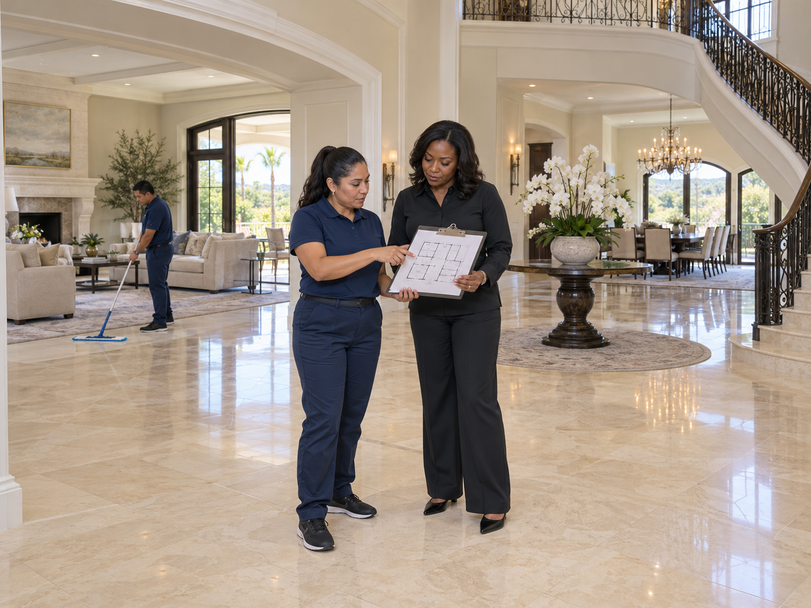

Clean Spaces
I manage a large estate and the property is too big to clean all at once. How should I break up the cleaning?

Start with how the property is used
Walk the estate with the person who manages it and list the main residence, guest buildings, staff areas, entrances, terraces, and other spaces in the cleaning scope. Group rooms that share an access route or similar cleaning needs. A formal dining room used occasionally should not automatically receive the same schedule as an entrance that staff use every day.
Separate routine work from rotating detail work
Create a short recurring list for busy floors, accessible surfaces, shared areas, and entry points. Keep a separate rotation for tasks such as interior glass, detailed ledges, seldom-used rooms, and deeper floor care. For example, the main entrance may be included on every scheduled visit while different guest wings receive detail work on alternate visits. That is a planning example, not a fixed schedule for every estate.
Make each visit a complete, manageable assignment
Give the team a clear start and finish area rather than a long list that spreads them across the whole property. Estimate the work after a walkthrough, including travel between buildings, moving equipment, access arrangements, and drying time where relevant. Leave time to return equipment and report unfinished work. If a zone consistently takes longer than expected, split it or adjust the visit rather than quietly skipping tasks.
Keep one record for the entire estate
Record the rooms completed, the tasks postponed, the reason for any delay, and the next planned visit. A simple shared checklist helps the property manager see whether a quiet wing has been missed while everyone is focused on busy rooms. Review the rotation when guests arrive, contractors begin work, or a part of the estate changes use. One person should approve changes so different staff members do not give the cleaning team conflicting priorities.